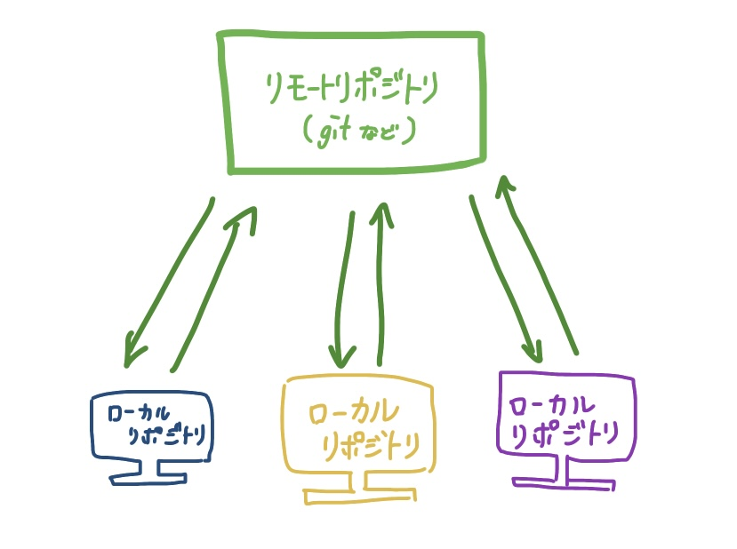

第１回まとめ
Q.gitとは？
サーバー上にあるリポジトリと個々のリポジトリ（ローカルリポジトリ）をつなぐシステムのことであり、リモートリポジトリの一種。
そもそもリポジトリとは、 様々なデータを保管している場所のこと。図で表すと、こんな感じ⬇️

・gitでできること
ファイルを過去に戻したり、様々なファイルの管理をしたりできる。 また、その編集履歴も見ることができる。
・参照サイト
リポジトリとは
gitに関して
Gitとは？
Q.htmlとは？
簡単に表すと、ウェブサイトの表示画面を作っている言語のこと。正式名称は、「Hyper Text Markup Language（ハイパーテキストマークアップ言語）」。
・htmlを使ってできること
この言語を使用することで、いつ誰が見ても同じように表示される静的なWebページを制作できる。
また、リンクや画像の組み込まれたメールを作ったり、YouTubeやGmailといったWebアプリを作ることも可能！
・参照サイト
htmlとは？簡単なHTMLタグの基本からCSSの基礎まで初心者にもわかりやすく解説
htmlとは？初心者向けに簡単に解説！